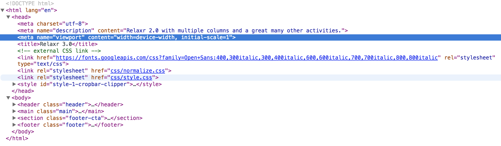
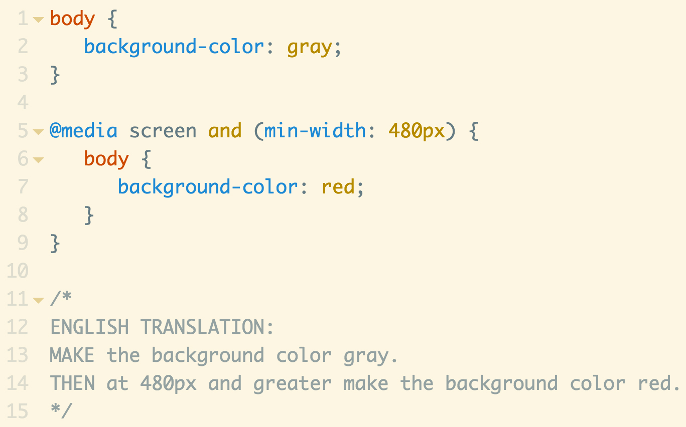

Review Relaxr 2.0
- relaxr_2.0
- How to center content with flexbox?
- Other questions?
Homework Due: Wednesday, September 16
This assginment is not mandatory but hight recommended.
-
Relaxr 3.0 - Mobile friendly!
Relaxr loves the new two-column layout but they've noticed a high percent of traffic views the site on a mobile device. They've requested we update the site to a responsive layout that is mobile friendly with a fixed navigation.
HINTS:
- How to Create a Fixed Navigation
- To view the site on your iphone, upload the files to your [github name].github.io site we setup during the first class.
-
To force the iPhone and other mobile devices to look correct we must add a specific meta tag to the header. This tag is: <meta name="viewport" content="width=device-width, initial-scale=1">.
This meta tag is on every responsive site on the web. Read the spec here.
It looks like this in your DOM.
 -
Safari Mobile requires vendor prefixes for flexbox. What this means is that along with writing display: flex; you will need to add a bunch of crappy vendor prefixes. Yes they are crappy and the best way to deal with them is CSS prepocessors. However, prepocessors are advanced and we have not gotten there yet. Until we do get there please do not freak out about old browser support. Read more about flex-box vendro prefixes here: CSS Tricks: Using Flexbox Vendor Prefixes.

CSS Display: None vs. Visibility: Hidden vs. Opacity: 0
- One at a time, uncomment the .box-two css properties and see how they affect this Codepen example.
dispay: none
This property essentially removes the item from the page. The space previously occupied by the element will collapse.visibility: hidden & opacity: 0;
These properties visually remove the element but the space previously held by the element will stay.
CSS Positioning - Static, Absolute, Relative, Fixed
-
The
position
property manipulates the location of an element. - CSS Position Values:
- Static: static is the default value. An element with position: static; is not positioned in any special way. A static element is said to be not positioned and an element with its position set to anything else is said to be positioned.
- Relative: relative behaves the same as static unless you add some extra properties. Setting the top, right, bottom, and left properties of a relatively-positioned element will cause it to be adjusted away from its normal position. Other content will not be adjusted to fit into any gap left by the element.
- Fixed: A fixed element is positioned relative to the viewport, which means it always stays in the same place even if the page is scrolled. As with relative, the top, right, bottom, and left properties are used.
- Absolute: absolute is the trickiest position value. Absolute behaves like fixed except relative to the nearest positioned ancestor instead of relative to the viewport. If an absolutely-positioned element has no positioned ancestors, it uses the document body, and still moves along with page scrolling. Remember, a "positioned" element is one whose position is anything except static.
- http://learnlayout.com/position.html
- Related Properties: top, left, right, bottom, z-index
CSS Media Queries
- Media Queries is a CSS3 module allowing content rendering to adapt to conditions such as screen resolution (e.g. smartphone screen vs. computer screen). It became a W3C recommended standard in June 2012, and is a cornerstone technology of Responsive web design.
-
Mobile First Methodology:
The best way to manage organizing media queries is to approach your code base with a mobile first method.
To accomplish Mobile First, add necessary css to create web page for mobile, then add additional css within min-width media queries.
-
Basic Syntax
